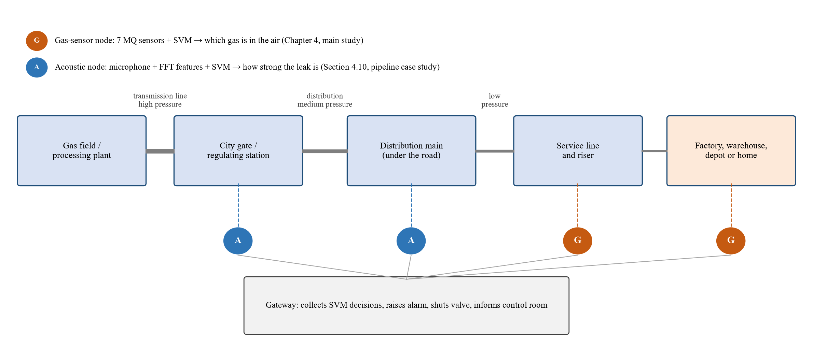
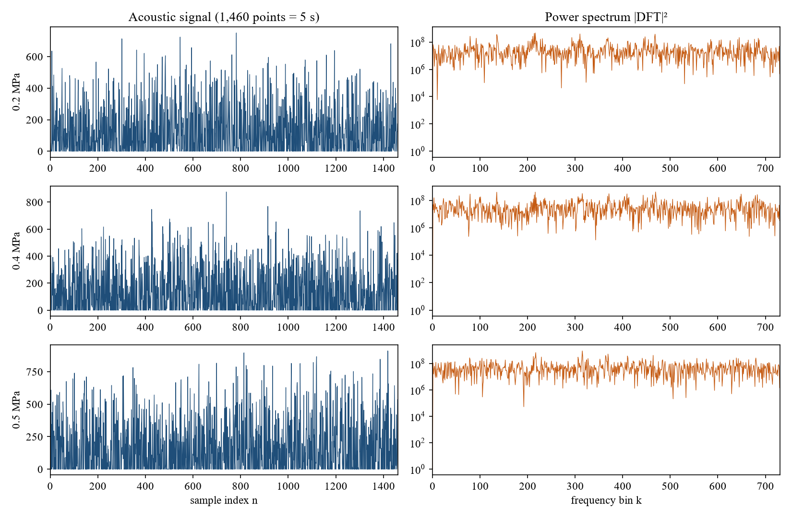
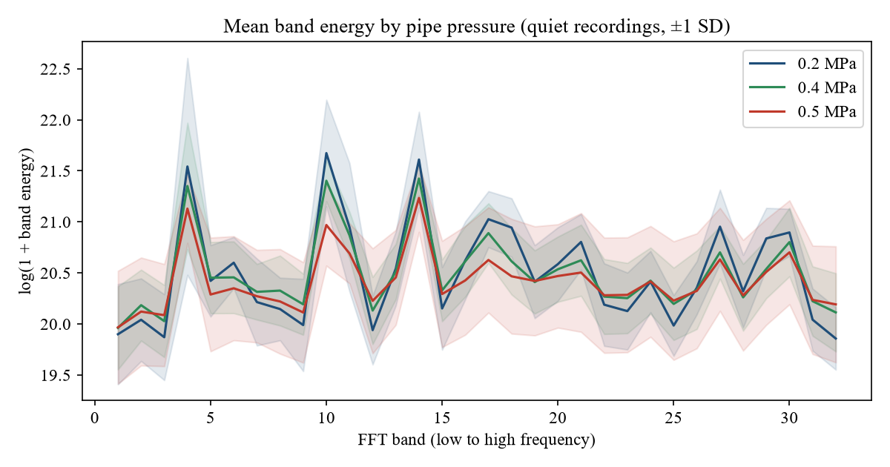
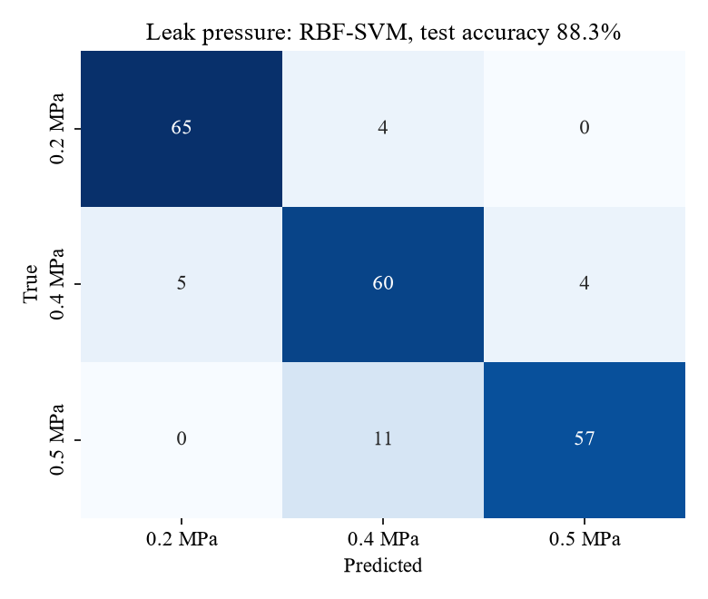
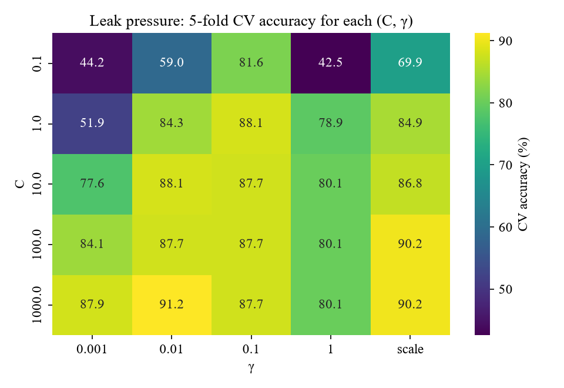
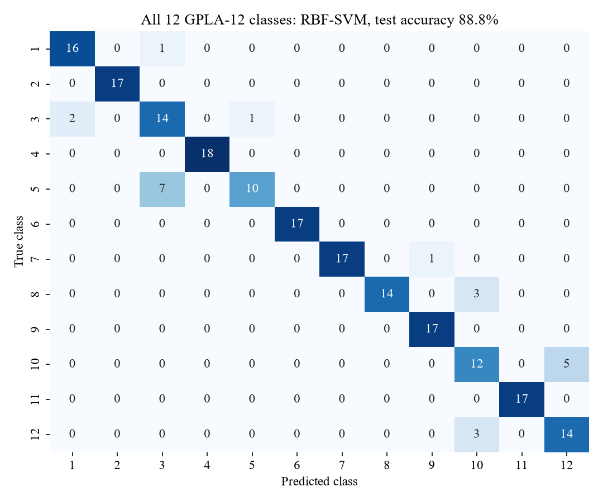

09 · The pipeline
The pipeline case study
Your instructor asked for a gas pipeline leak project. This page explains what was added to the report for that: the real-life pipeline setting (Section 1.3), the literature (2.6), a second, real pipeline dataset and its maths (3.9), and the results (4.10).
In plain words
The main experiment used gas sensors in a lab with deodorant and incense, not gas from a pipe. So the report now does two things. First, it explains where the system would live on a real gas pipeline: at the low-pressure end, where pipes reach factories, warehouses and homes. That is where the deadly Dhaka and Narayanganj leaks happened.
Second, it tests the same SVM method on real gas-pipe leak recordings. A Chinese university recorded the sound of leaks on a real pipeline test rig at three pressures. You turned each sound into 39 numbers using the Fourier transform. The SVM then told the pipe pressure, which shows how strong the leak is, correctly 88.35% of the time. On all 12 recording conditions it scored 88.83%. The original authors' SVM had managed only about 0.3–0.5 F1.
1 · Why pipelines matter in Bangladesh
- Gas is almost pure methane. Bangladeshi natural gas averages 97.33% methane, 1.72% ethane and 0.35% propane (Banglapedia).
- The network is old. Titas Gas had 13,238 km of pipelines and about 2.88 million customers on 30 June 2021. Its distribution lines were built from the 1970s to the late 1980s for a 30-year life (The Business Standard, 18 May 2023).
- Leaks are everywhere. A survey of 1,682 km in 2021–22 found methane at 9,926 locations and 459 leaks were repaired. Officials said a full survey would probably find more (same source).
- They kill. Narayanganj mosque, 2020: 34 dead from a leaking underground line. Siddique Bazar, Dhaka, 2023: investigators found gas leaking from a hole in an abandoned Titas pipe in the basement (Prothom Alo, 10 March 2023).
- Smell is not enough. Experts say odorant reveals only part of the leaks and is not used regularly across the whole network (The Daily Star, 26 April 2023).
- It is being fixed slowly. A Tk 8,069 crore project will replace 2,781 km of ageing pipe from July 2025 to December 2030 (The Business Standard, 15 August 2025).
2 · The stages of a gas pipeline network
Table 2 of the report (after Murvay & Silea, 2012, and Adegboye et al., 2019):
| Stage | What it does | Pressure | Where | Main leak risk |
|---|---|---|---|---|
| Gathering line | wells → processing plant | high | gas fields | large releases far from people |
| Transmission line | long-distance transport | highest | across the country, buried | ruptures, third-party damage |
| City gate / regulating station | lowers pressure, meters gas | high → medium | edge of towns, industrial estates | valve, flange and seal leaks |
| Distribution main | spreads gas under streets | medium → low | under roads | corrosion, digging, old joints |
| Service line and riser | one building's connection | low | factories, warehouses, homes | gas collecting indoors |
Leaks are described by size (a slow pin-hole leak or a sudden rupture) and location (buried, where gas can creep through soil into basements, or above ground). Main causes: external interference, corrosion, construction defects, material failure and ground movement (Murvay & Silea, 2012).
3 · Where your SVM sits on the pipeline

G · Gas-sensor node = the main study
Seven MQ sensors near a riser or a factory gas line say which gas is in the air. MQ2, MQ5 and MQ6 are made for methane, natural gas and LPG. Tested result: 98.23% on four classes.
A · Acoustic node = the case study
A microphone on the pipe says how strong the leak is from its sound. Tested on real pipe recordings: 88.35% on three pressures.
Why the low-pressure end? Because that is where pipeline gas meets people, and where the manufacturing and logistics theme of the title meets the pipeline theme. Long transmission lines are watched with pressure and flow methods. A cheap point sensor makes most sense at risers, regulating stations and factory gas lines.
4 · The real pipe data: GPLA-12
- Source
- Li & Yao (2021), Chongqing University of Science and Technology. Public on GitHub (EPL-2.0 licence); arXiv:2106.10277.
- Rig
- A real gas pipeline test system: screw compressor, pressure-regulating valves, flowmeters, pressure transmitters, and artificial leaks.
- Gas
- Compressed air (not methane).
- Sensors
- Two different microphones next to the leak (MAX4466 and LM386 modules).
- Samples
- 684 recordings, each 5 s long and stored as 1,460 numbers.
- 12 classes
- 3 pipe pressures (0.2, 0.4, 0.5 MPa) × 2 microphones × quiet or noisy. 57 recordings each.
- Main task
- Recognise the pipe pressure from the leak sound. Higher pressure means gas escapes faster, so this measures how strong and dangerous the leak is.
Every recording is a leak
GPLA-12 has no "no leak" class, so on this data the SVM estimates leak conditions. It does not decide whether there is a leak. Say this before anyone asks.
Why this dataset? A search of Kaggle, Mendeley Data, Zenodo, UCI and the literature found no public dataset with MQ gas sensors on real pipe leaks. The "pipeline" datasets on Kaggle and Mendeley were simulated, and real utility data (for example from Hefei, China) is not public. GPLA-12 was the only real, downloadable gas pipeline leak dataset.
5 · Turning a sound into 39 numbers (Section 3.9.1)
A raw recording \(\mathbf{s}=(s_0,\dots,s_{N-1})\), \(N=1460\), looks like random bursts in time. The information is in how much energy the sound has at each frequency. So, after removing the mean \(\bar s\), take the discrete Fourier transform:
The power spectrum is \(P_k=|S_k|^2\). Parseval's theorem says the signal's energy is shared out among the frequencies:
Split the 731 frequencies into 32 bands of about 23 and take the log of each band's energy (energies differ by orders of magnitude):
Add 7 simple statistics: mean, standard deviation, largest deviation, fraction of zeros, first and third quartiles, and the zero-crossing rate
Result: \(\boldsymbol{\phi}(\mathbf{s})\in\mathbb{R}^{39}\), 37 times shorter than the raw signal. After that, it is the same method as the main study: standardise with the training means, RBF-SVM, 5-fold cross-validated grid search over \(C\in\{0.1,\dots,1000\}\) and \(\gamma\), a stratified 70/30 split (478 train, 206 test) and seed 42.


6 · Results (Section 4.10)
| Task | Linear SVM, raw signal | Linear SVM, 39 features | RBF-SVM CV | RBF-SVM test | Best C, γ |
|---|---|---|---|---|---|
| Leak pressure (3 classes) | 65.05% | 82.04% | 91.23% | 88.35% | 1000, 0.01 |
| All 12 classes | 52.91% | 89.32% | 87.66% | 88.83% | 1000, 0.01 |
| Noisy vs quiet | 68.45% | 98.54% | 99.58% | 100.00% | 1, scale |
| Microphone 1 vs 2 | 100.00% | 100.00% | 100.00% | 100.00% | 0.1, scale |
Table 21 of the report. 206 test recordings. "scale" is scikit-learn's default γ = 1/(d·Var), about 0.026 here.

What to remember:
- Features make it learnable. On the raw signal a linear SVM gets 65% (pressure) and 53% (12 classes). On the 39 Fourier features it gets 82% and 89%.
- The RBF kernel adds 6.3 points on the hardest task (pressure: 82.04% → 88.35%). For the 12 classes, linear and RBF are about equal once the features exist.
- Errors are sensible. 11 of the 24 errors are 0.5 MPa called 0.4 MPa. These two pressures are only 0.1 MPa apart.
- Noise is detected perfectly, so a real node can know when it is listening in a noisy place.
- Far above the published SVM. Li & Yao reported SVM F1 ≈ 0.3–0.5 (their best, a CNN, ≈ 0.7). The tuned SVM reached macro F1 0.89 on 12 classes. It is the same lesson as the main study: scaling and tuning turn a weak SVM into a strong one.


7 · Honest limits
- Ordered split check: training on the first 70% of each class and testing on the last 30% gives 81.94% (random split: 88.35%). The drop is small, unlike the drift test of the main study (54.37%).
- Compressed air, not methane. The sound of a leak depends mainly on pressure and hole size, but the gas is different.
- Every recording is a leak: it estimates leak strength, not leak or no leak.
- One test rig, 684 recordings, so the test accuracy is uncertain by a few percentage points.
- No public dataset combines MQ sensors with real pipe leaks. Future work: record gas and sound together at real risers and factory gas lines, including normal operation.
Run it yourself
The case study is step 12 of the code folder: python 12_pipeline_case_study.py. It takes about 1 minute and prints every number on this page. See Run it in VS Code or Google Colab.
Say this if asked "where is the pipeline in your project?"
"Pipelines are the real-life setting. In Bangladesh, old Titas distribution lines leak in thousands of places and have caused deadly blasts, so my system is designed for the low-pressure end: risers, regulating stations and factory gas lines. The main experiment is the gas-sensor node, which says which gas is present with 98.23% accuracy. Because no public dataset has MQ sensors on real pipe leaks, I also tested the same SVM method on GPLA-12, real leak recordings from a gas pipeline test rig. With Fourier band-energy features it recognised the pipe pressure, meaning how strong the leak is, with 88.35% accuracy, far above the published SVM result. The honest limits are that the gas there is compressed air and every recording is a leak."